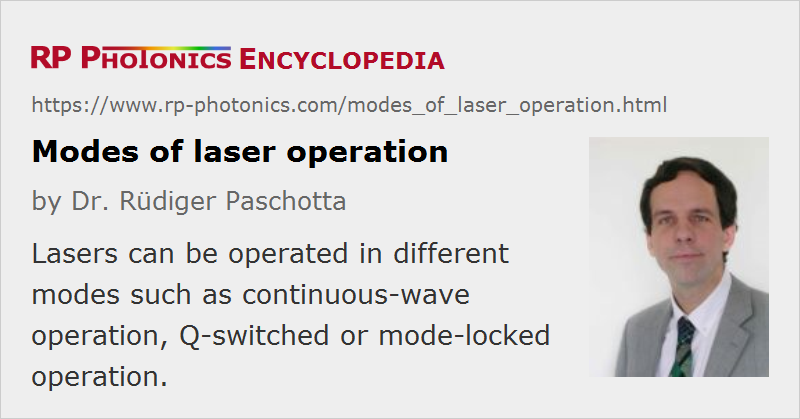

Modes of Laser Operation
Definition: a mode of operation such as continuous-wave operation, Q-switched or mode-locked operation
German: Betriebsarten von Lasern
How to cite the article; suggest additional literature
Author: Dr. Rüdiger Paschotta
Lasers can be used in distinct modes of operation, the most important of which are:
- Continuous-wave operation (cw operation): the laser is continuously pumped and emits light continuously, either on a single resonator mode (→ single-frequency operation) or on multiple modes (see also: single-mode operation).
- Quasi-continuous-wave operation (quasi-cw operation): the pump source is switched on only for short time intervals to prevent excessive heating.
- Gain-switched operation: gain switching means that the pump source is turned out only for very short time intervals (below the upper-state lifetime) in order to obtain short pulses.
- Q-switched operation: the intracavity losses are modulated, so that the laser emits energetic pulses. Pumping may be continuous or pulsed.
- Mode-locked operation: initiated and stabilized by an optical modulator or a saturable absorber, one or several ultrashort pulses are circulating in the laser resonator, so that a regular train of pulses is generated. Mode-locked lasers are usually continuously pumped, but mode locking with quasi-continuous pumps is also possible.
- Q-switched mode-locked operation: simultaneous mode locking and Q switching occurs.
In more exotic cases, lasers exhibit chaotic oscillations or fluctuations, or exhibit only amplified spontaneous emission.
Questions and Comments from Users
Here you can submit questions and comments. As far as they get accepted by the author, they will appear above this paragraph together with the author’s answer. The author will decide on acceptance based on certain criteria. Essentially, the issue must be of sufficiently broad interest.
Please do not enter personal data here; we would otherwise delete it soon. (See also our privacy declaration.) If you wish to receive personal feedback or consultancy from the author, please contact him e.g. via e-mail.
By submitting the information, you give your consent to the potential publication of your inputs on our website according to our rules. (If you later retract your consent, we will delete those inputs.) As your inputs are first reviewed by the author, they may be published with some delay.
See also: pulse generation
and other articles in the category lasers
|  |
If you like this page, please share the link with your friends and colleagues, e.g. via social media:
These sharing buttons are implemented in a privacy-friendly way!